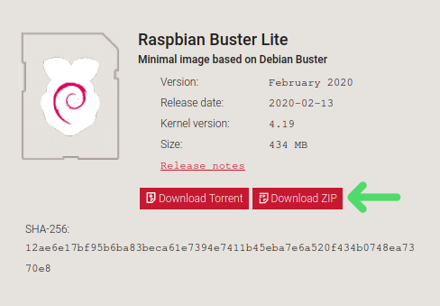
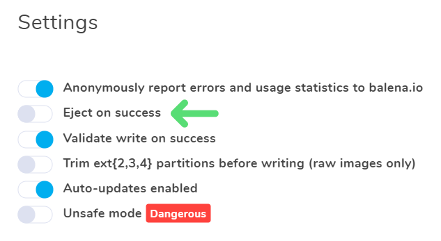
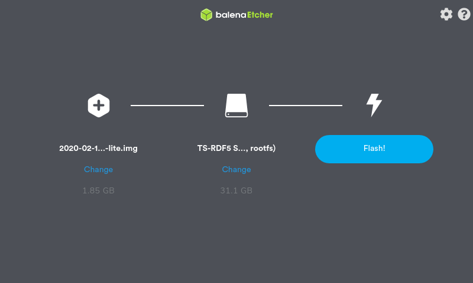
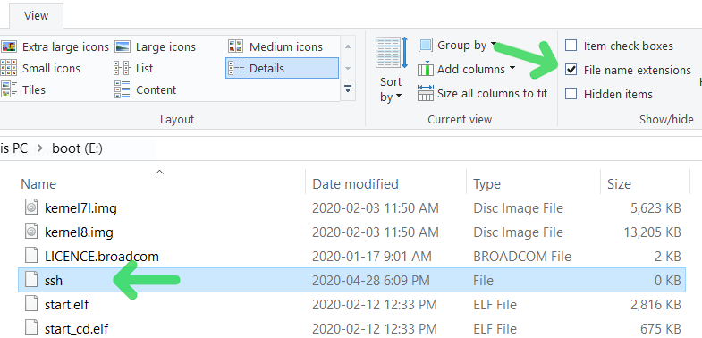

Requirements
- A Raspberry Pi 4 (with a suitable power adapter)
- A MicroSD card (>= 4GB) for the OS, and some way to connect it to your computer, such as a USB adapter
- A USB 3.0 external hard drive (such as this one) to store the backups on
- An Ethernet cable
Getting Raspbian onto the SD card
Step 1: Download the Raspbian Lite image
Go to https://www.raspberrypi.org/downloads/raspbian and click the Download ZIP button under Raspbian Lite (don’t worry about the version name)

Step 2: Flash the image onto the SD card
Download and install balenaEtcher from here
Open up balenaEtcher, click on the settings icon in the top-right corner, and make sure Eject on success is turned off. Click OK to get back to the main screen. 
Select the zip file you downloaded in the previous step as the image, select the SD card as the drive (make sure the name and size shown matches the SD card), and click Flash! 
Step 3: Enable SSH
Windows:
Open the boot partition of the newly formatted SD card and make sure File name extensions is checked under the View tab in File Explorer.
Create an empty file named ssh in the boot partition. If you’re on Windows, make sure you don’t include a .txt extension.

Linux:
Open the boot partition of the newly formatted SD card, and create a file with no extension named ssh.
Connecting to the Raspberry Pi
Step 4: Start up the Raspberry Pi
(Safely) remove the MicroSD card from the computer, and insert it into the slot on the back of the Raspberry Pi.
Plug the external hard drive into one of the blue USB 3.0 ports.
Connect the Raspberry Pi to the network using the Ethernet cable.
Plug in the power adapter, and you should see the red LED on the Raspberry Pi light up.
Step 5: Use SSH to connect to the Raspberry Pi
Open a terminal (on Windows you can do this by pressing Win+R, typing cmd, and hitting enter).
Enter the command ssh pi@raspberrypi (all commands are followed by enter to actually run them).
If it shows a message saying The authenticity of host 'raspberrypi (...)' can't be established., type yes and hit enter.
It will ask for a password, the default password is raspberry; type it in and hit enter.
You should see text similar to this:
Linux raspberrypi 4.19.97-v7l+ #1294 SMP Thu Jan 30 13:21:14 GMT 2020 armv7l
The programs included with the Debian GNU/Linux system are free software;
the exact distribution terms for each program are described in the
individual files in /usr/share/doc/*/copyright.
Debian GNU/Linux comes with ABSOLUTELY NO WARRANTY, to the extent
permitted by applicable law.
SSH is enabled and the default password for the 'pi' user has not been changed.
This is a security risk - please login as the 'pi' user and type 'passwd' to set a new password.
Wi-Fi is currently blocked by rfkill.
Use raspi-config to set the country before use.
pi@raspberrypi:~ $
Configuration
Step 6: Set the root password
Use a random password generator (like Diceware) to create a strong password.
Keep in mind that anyone on the local network can try to login to the Raspberry Pi, which is why it is important to create a long, completely random password.
Enter sudo passwd root and follow the prompts to set the root password.
You should see passwd: password updated successfully when it is done.
Step 7: Remove the default user
Enter sudo nano /etc/ssh/sshd_config to open up the SSH daemon config file.
Scroll down (using page up/down and/or arrow keys) to the line that says #PermitRootLogin prohibit-password and change it to PermitRootLogin yes to enable logging in as root.
Save the file using Ctrl+S, and exit nano using Ctrl+X.
Enter sudo systemctl restart sshd.service to restart the SSH daemon.
Type exit to end the SSH session, and log back into the Raspberry Pi as root by typing ssh root@raspberrypi.
It will prompt for the root password this time, which is the password you set in the previous step.
Finally, we can remove the default user by entering deluser --remove-home pi.
Step 8: Set the time zone (optional)
Find the TZ database name for your timezone by looking it up here.
For example, I live in Alberta, so I would use America/Edmonton.
Type timedatectl set-timezone <timezone>, replacing <timezone> with the TZ database name.
Step 9: Change the hostname (optional)
Enter hostnamectl set-hostname <name>, replacing <name> with your chosen hostname.
Step 10: Disable/uninstall unnecessary services (optional)
To remove Bluetooth support, type apt remove pi-bluetooth and hit enter when prompted.
To remove WiFi support, type apt remove wpasupplicant wireless-tools wireless-regdb and hit enter when prompted.
To remove sound support, type apt remove alsa-utils and hit enter when prompted.
Enter apt autoremove and hit enter when prompted to remove all now-unneeded packages.
Step 11: Format the external hard drive
WARNING: this will permanantly delete all data on the external hard drive!
Make sure no other drives are connected to the Raspberry Pi, or you risk accidentally wiping them!
Enter wipefs -a /dev/sda to wipe the drive.
root@rpi-backup:~# wipefs -a /dev/sda
/dev/sda: 8 bytes were erased at offset 0x00000200 (gpt): 45 46 49 20 50 41 52 54
/dev/sda: 8 bytes were erased at offset 0x57541dffe00 (gpt): 45 46 49 20 50 41 52 54
/dev/sda: 2 bytes were erased at offset 0x000001fe (PMBR): 55 aa
/dev/sda: calling ioctl to re-read partition table: Success
Type fdisk /dev/sda to get a screen similar to this:
root@rpi-backup:~# fdisk /dev/sda
Welcome to fdisk (util-linux 2.33.1).
Changes will remain in memory only, until you decide to write them.
Be careful before using the write command.
Device does not contain a recognized partition table.
The size of this disk is 5.5 TiB (6001174511616 bytes). DOS partition table format cannot be used on drives for volumes larger than 4294966784 bytes for 512-byte sectors. Use GUID partition table format (GPT).
Created a new DOS disklabel with disk identifier 0xf5063b2a.
Type g to create a GPT partition table, then n to create a new partition.
Press enter three times to accept the defaults. If it asks about removing a signature, enter y.
Press w to save the new partition table to disk and exit.
Command (m for help): g
Created a new GPT disklabel (GUID: F343EF07-9875-1C45-A6F1-AF567D034704).
Command (m for help): n
Partition number (1-128, default 1):
First sector (2048-11721043934, default 2048):
Last sector, +/-sectors or +/-size{K,M,G,T,P} (2048-11721043934, default 11721043934):
Created a new partition 1 of type 'Linux filesystem' and of size 5.5 TiB.
Partition #1 contains a ntfs signature.
Do you want to remove the signature? [Y]es/[N]o: y
The signature will be removed by a write command.
Command (m for help): w
The partition table has been altered.
Calling ioctl() to re-read partition table.
Syncing disks.
Type mkfs.ext4 -L 'Backup Drive' /dev/sda1 to format the new partition.
root@rpi-backup:~# mkfs.ext4 -L 'Backup Drive' /dev/sda1
mke2fs 1.44.5 (15-Dec-2018)
Creating filesystem with 1465130235 4k blocks and 183144448 inodes
Filesystem UUID: de21d0d6-040b-4212-944f-d4180764bf37
Superblock backups stored on blocks:
32768, 98304, 163840, 229376, 294912, 819200, 884736, 1605632, 2654208,
4096000, 7962624, 11239424, 20480000, 23887872, 71663616, 78675968,
102400000, 214990848, 512000000, 550731776, 644972544
Allocating group tables: done
Writing inode tables: done
Creating journal (262144 blocks): done
Writing superblocks and filesystem accounting information: done
Step 12: Configure the fstab
Enter mkdir /backup to create a mountpoint for the backup partition.
Type echo "UUID=$(lsblk -no UUID /dev/sda1) /backup ext4 defaults,noatime 0 1" >> /etc/fstab to automatically mount the backup partition on boot.
Step 13: Install BorgBackup
Type apt install borgbackup
Step 14: Create the user creation/removal scripts
Enter nano create-user.sh to create a new file, and then copy-and-paste the following script:
#!/bin/bash
set -e
if [[ "$#" != "1" ]] || [[ "$1" =~ "-" ]]; then
echo "usage: $0 <name>"
exit 1
fi
real_uname="backup-$1"
# create user without password
adduser --disabled-password --gecos $real_uname $real_uname
# create ssh directory
mkdir /home/$real_uname/.ssh
chmod 700 /home/$real_uname/.ssh
# fix ownership
chown $real_uname -R /home/$real_uname
# create backup directory
mkdir -m700 /backup/$real_uname
chown $real_uname /backup/$real_uname
echo "Successfully created new user '${real_uname}'"
Type Ctrl+S to save it, then Ctrl+X to exit nano.
Enter nano remove-user.sh to create another new file, and then copy-and-paste this script:
#!/bin/bash
set -e
if [[ "$#" != "1" ]] || [[ "$1" =~ "-" ]]; then
echo "usage: $0 <name>"
exit 1
fi
real_uname="backup-$1"
# remove user + home
deluser --remove-home $real_uname
# attempt to remove backup directory
rmdir --ignore-fail-on-non-empty "/backup/$real_uname"
# if it wasn't empty, warn about it
if [[ -d "/backup/$real_uname" ]]; then
echo "Leaving /backup/$real_uname alone for manual cleanup"
fi
Type Ctrl+S to save it, then Ctrl+X to exit nano.
Enter chmod +x create-user.sh remove-user.sh to make the scripts executable.
Step 15: Using the scripts
For each workstation, run ./create-user.sh <name>, where <name> is replaced by a unique name for the workstation. Make sure this name is lowercase, has no special characters, and no spaces.
If you need to delete a user, run ./remove-user.sh <name>, where <name> is the unique workstation name.
Go to the Client Configuration page to learn how to configure a Windows-based workstation to automatically backup to your new backup server.